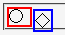
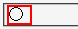

相対配置されたインライン要素の子孫要素を絶対配置（position: absolute;）するとき、相対配置された要素が絶対配置のコンテナブロックとして機能しない。
<span style="position:relative; border:2px solid red;">○ <span style="position:absolute; left:1.5em; top:0; border:2px solid blue;">◇ </span></span>
「○」を含むspan要素（親）を相対配置、「◇」を含むspan要素（子）を絶対配置しています。
※Opera7では「◇」を含むspan要素がhtml要素をコンテナブロックとして絶対配置されています。
Moz1.0.2での表示（標準モード）
Opera7.03での表示（標準モード）
このバグのために、ルビ関連要素をInternet Explorerのように表示（横書きではrt要素がrb要素の上に置かれる）させるスタイルシートのサンプルを使用したときにrt要素が消えてしまう（閲覧領域の外側にはみ出している）ことがあります。
相対配置した要素がブロック要素の場合はコンテナブロックとして機能します。また、親のインライン要素を絶対配置した場合も同様にコンテナブロックとして機能します。
Opera7.03では標準・互換モードともに不具合の発生が確認されました。